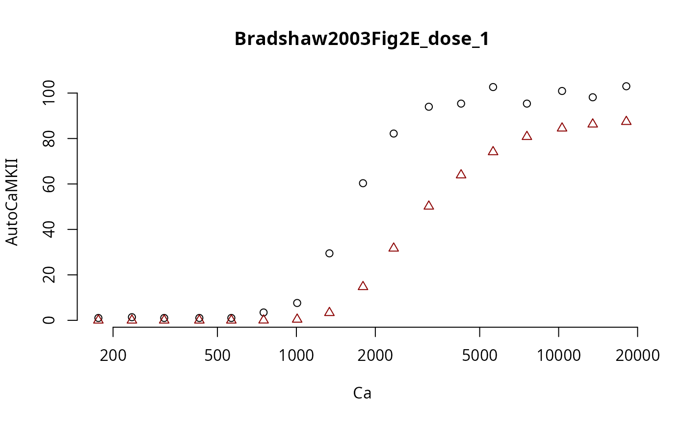

SMMALA and CaMKII
smmala.RmdSimplified Manifold Metropolis Adjusted Langevin Algorithm
The included example model called CaMKII illustartes an insteresting case: - simulations are very different in consumed cpu time (by an order of magnitude) - simulation time heavily depends on the used solver - the data type is Dose Response rather than Time Series - simulations are very slow compared to the other example models
This makes the likelihood function (or objective function) expensive. For this reason, we need to make high quality Markov chain proposals, to increase the impact that a single likelihood evaluation makes.
The SMMALA algorithm tries to address this issue and provide update proposals that traverse a larger distance than what is feasible with the metropolis algorithm while keeping the same acceptance rate.
These higher quality proposals are informed by the gradient of the log-likelihood, and its Fisher information matrix.
An ingredient of the Fisher information is the solution’s sensitivity
\[S(t;x,p)_i^{~j} = \frac{d x_i(t;p)}{dp_j}\,,\]
which is usually quite difficult to get. Instead we approximate it. The rgsl package will try to approximate the sensitivity in a deterministic way. The approximation error will make the overall algorithm less efficient than using exact solutions, but the approximations are better the closer we are to a steady state.
In this model the data is either in steady state, or very close to it, so the approximations work very well.
The default parameters are not optimized to fit the data. We don’t expect a good fit in the initial simulation.
Below we describe two different approaches for this model. Ultimately, the frist approach makes better use of compute-resources.
The model is very sensitive to integrator choices, some perform better some worse. It is very likely that the sundials solvers would perform much better than the GSL solvers, but even between different GSL solvers there are big differences in consumed cpu-time.
Dose Sequence Approach
For this model one of th epossible approaches is to create an event schedule that applies a certain dose of base calcium or calmodulin (depending on the experiment) in a sequence. Here is an example dose sequence of base Ca levels (dose column):
!!SBtab Document='CaMKIIs' TableName='EventScheduleShifman2006Fig1Bsq'
!TimePoint !Time !Transformation !Dose
ShTP01 0 CaSeq 364
ShTP02 10 CaSeq 2305
ShTP03 20 CaSeq 2548
ShTP04 30 CaSeq 2912
ShTP05 40 CaSeq 3640
ShTP06 50 CaSeq 4126
ShTP08 70 CaSeq 4611
ShTP10 90 CaSeq 5461
ShTP12 110 CaSeq 6067
ShTP14 130 CaSeq 6796
ShTP16 150 CaSeq 7281
ShTP17 160 CaSeq 8495
ShTP18 170 CaSeq 9344
ShTP19 180 CaSeq 24393
ShTP20 190 CaSeq 34101The transformation event CaSeq is defined in the third row of
Transformation.tsv (named CaSeq):
!!SBtab Document='CaMKIIs' TableName='Transformation'
!ID >CaBase >CaM_0
CaSeq dose CaM_0
CaMSeq CaBase doseWe represent each experiment as a time series, even though the data sets were originally represented as dose response curves (a map between an input [e.g. Ca] and an output [e.g. ActivePP2B]). We arbitrarily set a time betwen input doses and simulate all points in one series, with just enough time in-between to reach the next higher steady state from the current steady state (the steady state level changes with each dose of base-level Ca).
The table of experiments looks like this (truncated):
!!SBtab SbtabVersion='1.0' TableType='QuantityMatrix' TableName='Experiments' Document='CaMKIIs'
!ID !Type >PP1_0 >CaMKII_0 >CaM_0 >PP2B_0 >isOn !T0 !Event
Bradshaw2003Fig2E Time Series 0 200 2000 0 TRUE -60 EventScheduleBradshaw2003Fig2E
Shifman2006Fig1Bsq Time Series 0 5000 5000 0 TRUE -60 EventScheduleShifman2006Fig1Bsq
ODonnel2010Fig3Co Time Series 0 0 0 100 FALSE -60 EventScheduleODonnel2010Fig3Co
Stemmer1993Fig1tr Time Series 0 0 300 3 TRUE -60 EventScheduleStemmer1993Fig1tr
Stemmer1993Fig1fc Time Series 0 0 30 3 TRUE -60 EventScheduleStemmer1993Fig1fc
Stemmer1993Fig2Afc Time Series 0 0 25000 0 TRUE -60 EventScheduleStemmer1993Fig2AfcSimulation
During a simulation, these doses will create a staircase of equilibria:
library(parallel)
f <- uqsa::uqsa_example("CaMKIIs")
sb <- SBtabVFGEN::sbtab_from_tsv(f)
#> [tsv] file[1] «Bradshaw2003Fig2E.tsv» belongs to Document «CaMKIIs»
#> I'll take this as the Model Name.
#> Bradshaw2003Fig2E.tsv Compartment.tsv Compound.tsv Constant.tsv EventScheduleBradshaw2003Fig2E.tsv EventScheduleODonnel2010Fig3Co.tsv EventScheduleShifman2006Fig1Bsq.tsv EventScheduleStemmer1993Fig1fc.tsv EventScheduleStemmer1993Fig1tr.tsv EventScheduleStemmer1993Fig2Afc.tsv Experiments.tsv Expression.tsv Input.tsv ODonnel2010Fig3Co.tsv Output.tsv Parameter.tsv Reaction.tsv Shifman2006Fig1Bsq.tsv Stemmer1993Fig1fc.tsv Stemmer1993Fig1tr.tsv Stemmer1993Fig2Afc.tsv Transformation.tsv
ex <- SBtabVFGEN::sbtab.data(sb)
print(length(ex))
#> [1] 6
options(mc.cores = length(ex))
cfile <- uqsa::uqsa_example(comment(sb),f="c")
modelName <- uqsa::checkModel(comment(sb),cfile)
#> building a shared library from c source, and using GSL odeiv2 as backend (pkg-config is used here).
#> cc -shared -fPIC `pkg-config --cflags gsl` -o './CaMKIIs.so' '/tmp/RtmpAJRrSc/temp_libpath4a777745142a/uqsa/extdata/CaMKIIs/CaMKIIs_gvf.c' `pkg-config --libs gsl`
rfile <- uqsa::uqsa_example(comment(sb),pat=sprintf("^%s[.]R$",comment(sb)))
source(rfile)
p <- CaMKIIs_default()
u <- ex[[1]]$input
par <- head(p,-length(u))
## This is a simulation with time points inserted between the measurement times,
## to see what happens in-between them
for (i in seq_along(ex)){
t_ <- ex[[i]]$outputTimes
ex[[i]]$measurementTimes <- t_
ex[[i]]$outputTimes <- sort(c(t_,seq(0,max(t_),length.out=length(t_)*10)))
}
s <- uqsa::simulator.c(ex,modelName,method = rgsl::integrationMethod("msadams"))
#> Loading required package: rgsl
y <- s(as.matrix(par))
cpuSeconds <- unlist(lapply(y,\(l) l$cpuSeconds))
names(cpuSeconds) <- names(ex)
print(cpuSeconds)
#> Bradshaw2003Fig2E Shifman2006Fig1Bsq ODonnel2010Fig3Co Stemmer1993Fig1tr
#> 7.077217 1.840241 0.497266 0.294114
#> Stemmer1993Fig1fc Stemmer1993Fig2Afc
#> 0.634721 6.669697
if (length(y)==length(ex)){
par(mfrow=c(2,3),bty="n")
for (i in seq_along(ex)){
o <- apply(is.na(ex[[i]]$outputValues),2,any)
t_<-ex[[i]]$outputTimes
f_<-y[[i]]$func[!o,,1]
m_<-ex[[i]]$measurementTimes
v_<-as.numeric(ex[[i]]$outputValues[[which(!o)]])
e_<-as.numeric(ex[[i]]$errorValues[[which(!o)]])
yl <- names(ex[[i]]$outputValues)[which(!o)]
if (!any(is.na(f_))){
plot(t_,f_,type='l',xlab='time',ylab=yl,main=names(ex)[i])
arrows(m_,v_,m_,v_+e_,angle=90,length=0.01)
points(m_,v_,pch=1)
arrows(m_,v_,m_,v_-e_,angle=90,length=0.01)
}
}
}Here we notice that in Experiment 1, the trajectory fails to reach steady state (i.e. a flat line), for any dose. So, it doesn’t look like a staircase at all.
It is possible that the default parameter set will not allow the system to go into steady state quickliy enough, even if we increase the time between the transformation events.
Asymmetry
The experiments for this model are different in complexity. How many seconds the solver needs to claculate a simulated trajectory depends on the chosen integration method.
This Table-screenshot shows that some of the integration methods fail to return a solution for some of the simulated scenarios, even with the default parameters. These methods should be excluded from MCMC. The remaining methods perform very differently. Some of these methods may fail for parameter-vectors proposed during MCMC.
This al means that the posterior distribution depends on the used solver: no solution from the chosen solver means that the liklelihood is 0. So, it may be a good idea to use the most robust solver if it means that more solutions are found.
This is a table of acceptable cpu times in seconds:
| id | method | Exp 1 | Exp 2 | Exp 3 | Exp 4 | Exp 5 | Exp 6 |
|---|---|---|---|---|---|---|---|
| 0 | msbdf | 6.603 | 2.41 | 1.522 | 0.035 | 0.265 | 37.386 |
| 1 | msadams | 6.822 | 1.54 | 0.435 | 0.287 | 0.437 | 6.033 |
| 7 | rkck | 1.703 | 0.419 | 0.113 | 0.077 | 0.109 | 1.669 |
| 8 | rkf45 | 1.692 | 0.385 | 0.129 | 0.08 | 0.125 | 1.656 |
| 10 | rk2 | 1.642 | 0.347 | 0.104 | 0.063 | 0.102 | 1.498 |
This table shows that it is vitally important to pick the right integration method, but also that simulating experiments in parallel is not always a good idea as some of the threads will return much sooner than others and idle until the slowest experiment is finished. Starting more Markov chains may be better in that case.
Here is an example, where we stretched the time-line for the
Experiment named Bradshaw2003Fig2E as it is very slow to
approach steady state and the most problematic experiment in this dose
sequence.
Stretching the time line allows the ODE system more time to converge, but also increases the simulation time:
And again, just the portion where all experiments returned a result:
| id | method | Exp 1 | Exp 2 | Exp 3 | Exp 4 | Exp 5 | Exp 6 |
|---|---|---|---|---|---|---|---|
| 0 | msbdf | 53.16 | 2.42 | 1.52 | 0.04 | 0.27 | 39.64 |
| 1 | msadams | 48.23 | 1.54 | 0.44 | 0.29 | 0.44 | 5.91 |
| 7 | rkck | 11.81 | 0.38 | 0.12 | 0.08 | 0.12 | 1.57 |
| 8 | rkf45 | 12.15 | 0.39 | 0.12 | 0.08 | 0.12 | 1.62 |
| 10 | rk2 | 11.73 | 0.36 | 0.10 | 0.07 | 0.11 | 1.44 |
Dose Response Approach
Instead, we can also simulate this model as a dose response curve.
This is done in a copy of the model that doens’t have the s
suffix (for sequential).
In this formulation of the model, we need to be able to reach each
steady state from the default initial conditions, not just from a very
nearby previous steady state. So, we give the system more time to reach
it (600 seconds !Time for each data point). Because of this
longer time, this is a less efficient approach. The advantage is that it
avoids event schedules and transformations entirely.
!!SBtab SbtabVersion='1.0' Document='CaMKII' TableType='QuantityMatrix' TableName='Experiments'
!ID !Type >Ca_set >PP1_0 >CaMKII_0 >CaM_0 >PP2B_0 >cab !T0 !Event !Time
Bradshaw2003Fig2E Dose Response -1 0 200 2000 0 0 -100 TurnOn 600
Shifman2006Fig1Bsq Dose Response -1 0 5000 5000 0 0 -100 TurnOn 600
ODonnel2010Fig3Co Dose Response 0 0 0 -1 100 0 -100 TurnOn 600
Stemmer1993Fig1tr Dose Response -1 0 0 300 3 0 -100 TurnOn 600
Stemmer1993Fig1fc Dose Response -1 0 0 30 3 0 -100 TurnOn 600
Stemmer1993Fig2Afc Dose Response -1 0 0 25000 0 0 -100 TurnOn 600The data files look different, they map inputs to outputs, rather than time to outputs:
!!SBtab Document='CaMKII' TableType='QuantityMatrix' TableName='Bradshaw2003Fig2E'
!ID >Ca_set >AutoCaMKII ~AutoCaMKII
E0D0 175.8 1.04 11.9953
E0D1 236 1.38 11.9953
E0D2 313.3 1.04 11.9953
E0D3 426.6 1.04 11.9953
E0D4 564.9 1.04 11.9953
E0D5 749.9 3.46 11.9953
E0D6 1006.9 7.63 11.9953
E0D7 1336.6 29.47 11.9953
E0D8 1794.7 60.34 11.9953
E0D9 2349.6 82.19 11.9953
E0D10 3198.9 93.98 11.9953
E0D11 4246.2 95.37 11.9953
E0D12 5623.4 102.65 11.9953
E0D13 7568.3 95.37 11.9953
E0D14 10303.9 100.92 11.9953
E0D15 13489.6 98.15 11.9953
E0D16 18113.4 103 11.9953And there are no events at all. This sequence of Ca doses will be
converted to one time series experiment per line; the dose
!ID will be used as the experiment name.
In this version each point is treated as an independent measurement, unrelated to its neighbors. The doses and data points can be in any order.
f <- uqsa::uqsa_example("CaMKII")
sb <- SBtabVFGEN::sbtab_from_tsv(f)
#> [tsv] file[1] «Bradshaw2003Fig2E.tsv» belongs to Document «CaMKII»
#> I'll take this as the Model Name.
#> Bradshaw2003Fig2E.tsv Compartment.tsv Compound.tsv Constant.tsv Experiments.tsv Expression.tsv Input.tsv ODonnel2010Fig3Co.tsv Output.tsv Parameter.tsv Reaction.tsv Shifman2006Fig1Bsq.tsv Spikes.tsv SpikeSeries.tsv Stemmer1993Fig1fc.tsv Stemmer1993Fig1tr.tsv Stemmer1993Fig2Afc.tsv Transformation.tsv TurnOn.tsv
ex <- SBtabVFGEN::sbtab.data(sb)
print(length(ex))
#> [1] 100
options(mc.cores = parallel::detectCores())
cfile <- uqsa::uqsa_example(comment(sb),f="c")[1]
modelName <- uqsa::checkModel(comment(sb),cfile)
#> building a shared library from c source, and using GSL odeiv2 as backend (pkg-config is used here).
#> cc -shared -fPIC `pkg-config --cflags gsl` -o './CaMKII.so' '/tmp/RtmpAJRrSc/temp_libpath4a777745142a/uqsa/extdata/CaMKII/CaMKII_gvf.c' `pkg-config --libs gsl`
rfile <- uqsa::uqsa_example(comment(sb),pat=sprintf("^%s[.]R$",comment(sb)))[1]
source(rfile)
p <- CaMKII_default()
u <- ex[[1]]$input
par <- head(p,-length(u))
i <- which(startsWith(names(ex),"E0"))
## simulate the first subset:
s <- uqsa::simulator.c(ex[i],modelName,method = rgsl::integrationMethod("msadams"))
y <- s(as.matrix(par))
cpuSeconds <- unlist(lapply(y,\(l) l$cpuSeconds))
names(cpuSeconds) <- names(ex[i])
print(cpuSeconds)
#> E0D0 E0D1 E0D2 E0D3 E0D4 E0D5 E0D6 E0D7
#> 5.230821 5.159520 5.295578 5.148994 5.168618 5.192885 5.187591 5.250753
#> E0D8 E0D9 E0D10 E0D11 E0D12 E0D13 E0D14 E0D15
#> 5.414976 5.411192 5.523694 6.790849 6.586266 6.686983 7.443709 6.741364
#> E0D16
#> 4.987958
o <- which(!is.na(ex[[head(i,1)]]$outputValues[1,]))
Ca <- unlist(lapply(ex[i],\(x) x$input['Ca_set']))
f_ <- unlist(lapply(y[i],\(y) y$func[o,1,1]))
v_ <- unlist(lapply(ex[i],\(x) x$outputValues[[o]]))
e_ <- unlist(lapply(ex[i],\(x) x$errorValues[[o]]))
par(bty="n",xlog=TRUE)
yLabel <- names(ex[[1]]$outputValues)[o]
E <- rownames(sb$Experiments)
plot(Ca,f_,pch=2,xlab='Ca',ylab=yLabel,main=E[1],ylim=c(0,120),log="x")
arrows(Ca,v_,Ca,v_+e_,angle=90,length=0.1)
points(Ca,v_,pch=1)
arrows(Ca,v_,Ca,v_-e_,angle=90,length=0.1)
Here the triangles represent the independent simulation results.
This approach lends itself more to parallelization than the dose sequence, because all these independent points can be simulated in parallel (all 99 points, within each curve and between the curves). But, if a small number of the points require a long simulation time, then their solution will pause the entire Markov chain until all points have been obtained.
Therefore, it may be much better to simulate all experiments sequentially (see previous section), and instead start more parallel Markov chains (and merge them in the end). This way, fewer MPI-workers/threads/cores idle.